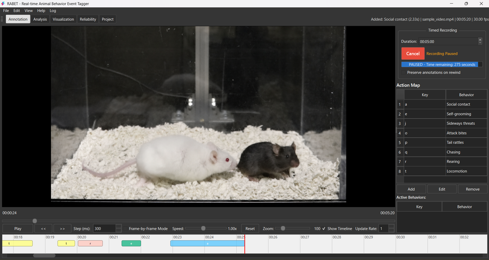

RABET¶
Real-time Animal Behavior Event Tagger¶
動物行動の動画アノテーションに特化した、自己完結型のデスクトップアプリケーション。 フレーム単位の再生、State / Point イベントの記録、複数 CSV の解析、ラスタープロット、 信頼性評価、バウト解析、1 次遷移解析までを一つのツールで扱えます。

Annotation ビュー — ビデオプレイヤー、録画操作、アクションマップ、色分けされたタイムライン。
RABET の特徴¶
-
フレーム精度の再生
PyAV / FFmpeg ベースのデコーダー。1フレームずつのコマ送りや即時シークに対応。 VLC やコーデックパックの別途インストールは不要。
-
キーボード駆動のタグ付け
キーと行動の対応関係を設定可能。持続時間を持つ State イベントと、 一瞬の発生を記録する Point イベントを使い分けられます。
-
インタラクティブなタイムライン
色分けされた行動バーと自動スクロールする再生ヘッド。クリック で選択、
Deleteで削除、Ctrl+Zで取り消し。 -
複数ファイル解析
アノテーション CSV を集約してセッション全体・時間ビン単位の サマリーを生成。カスタム潜時・合計時間メトリクスに対応。 Excel / JASP / R / SPSS に直接ペースト可能。
-
バウト解析
BCI を指定して反復イベントをバウトへまとめます。BCI の参考推定、 個体別バウト指標、バウトラスタープロットに対応。
-
遷移解析
1 次遷移行列、条件付き確率、odds ratio、adjusted residual、 ヒートマップ、antecedent-window predictability を計算できます。
-
ラスタープロット可視化
動物間を跨ぐラスタープロット。行動別カラーカスタマイズ、 グリッド線、PNG / SVG / PDF 形式での書き出しに対応。
-
信頼性評価を内蔵
評価者間／評価者内の一致度を ICC(2,1)、Cohen's κ、 Krippendorff's α で計算。
psych::ICCを使った R 言語 リファレンス実装で検証済み。
クイックスタート¶
自己完結型バイナリ
VLC、FFmpeg、Python、scipy、R などのシステムインストールは 一切不要。動画再生、フレームデコード、一致度メトリクス 計算に必要なすべての依存関係を RABET が同梱済み。
RABET の引用¶
研究で RABET をご利用いただいた場合は、ぜひ引用をお願いいたします。機械可読形式の引用情報は CITATION.cff
に記載されています。人間が読みやすい形式の引用例は以下のとおりです。
Mitsui, K. (2026). RABET — Real-time Animal Behavior Event Tagger (Version 1.4.0). https://github.com/mi2e-K/RABET doi:10.5281/zenodo.15313025
上記の DOI は Zenodo の concept DOI です。再現性のため、実際に使った RABET のバージョンもあわせて記録してください。
RABET を解説する論文を準備中です。